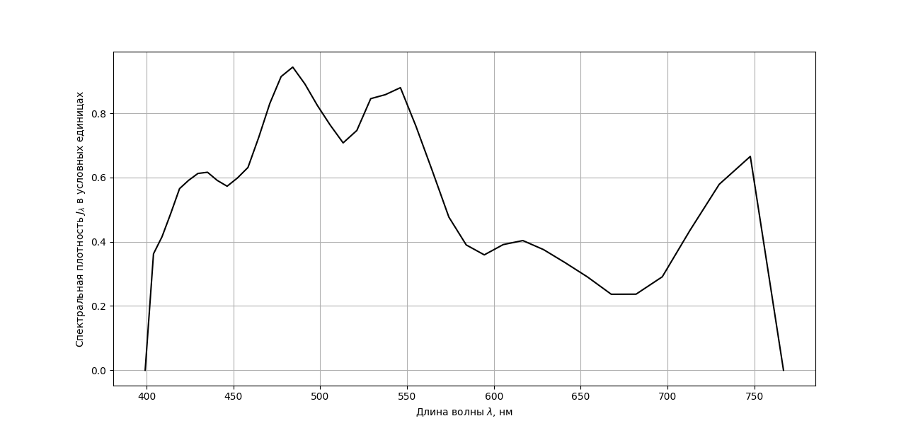
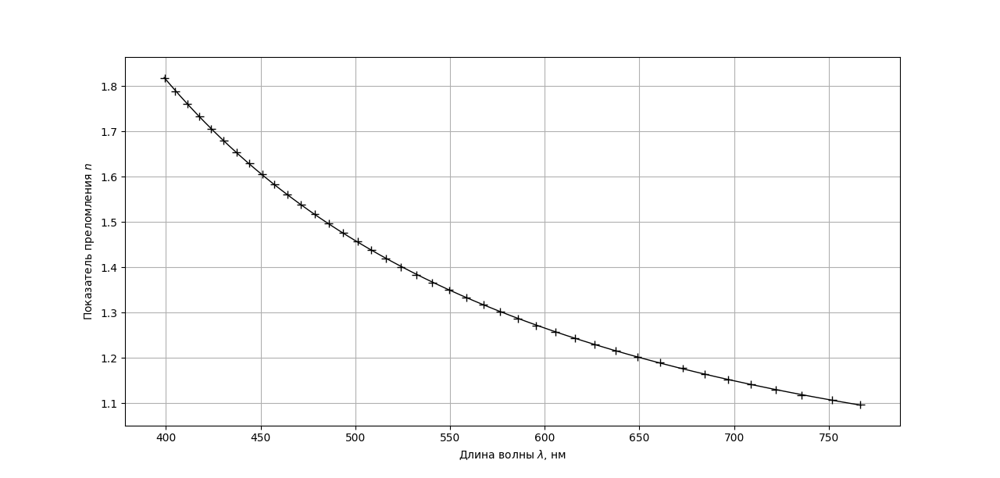

Determination of refractive index --- Solution
W23 (2023) — English translation
A1For each $x$, find $n$.0.41
Answer: See $\bf A6$.
A2For each $x$, find $\lambda$.0.82
Answer: See $\bf A6$.
A3For each $x$, find $\mathcal J_\lambda$ (in arbitrary units per nm). Since for each $x$ we have already calculated $\lambda$, we obtain the dependence $\mathcal J_\lambda(\lambda)$.0.82
Answer: See $\bf A6$.
A4Plot a graph of $\mathcal J_\lambda(\lambda)$.0.49

A6Find for each $x$ the value $\sigma$. Since for each $x$ we found a $\lambda$, we also obtained the dependence $\lambda(\sigma)$.1.23
For each $x_i$ we find the value of the sum \[\Sigma_i=2\sum_{k=1}^{i-1}\mathcal J_{x_k}+\mathcal J_{x_i},\] as well as the normalizing factor \[\Sigma=2\sum_i\mathcal J_{x_i}.\] Since $\lambda(x)$ is a decreasing function, then $\sigma=0$ corresponds to the value $x=x_\max$, therefore $\sigma_i$ is calculated by the formula: \[\sigma_i=1-\frac{\Sigma_i}{\Sigma}.\]
Answer: $x$ $\mathcal J_x$ $n$ $\lambda$, nm $\mathcal J_\lambda$ $\sigma$ 0.1250 0 1.2862 766.8 0.000 1.0000 0.1275 4917 1.2938 747.7 0.6658 0.9684 0.1300 4024 1.3014 729.8 0.5789 0.9110 0.1325 2854 1.3091 712.9 0.4351 0.8669 0.1350 1805 1.3170 697.0 0.2909 0.8370 0.1375 1393 1.3249 681.9 0.2368 0.8165 0.1400 1322 1.3329 667.6 0.2366 0.7990 0.1425 1545 1.3411 653.9 0.2905 0.7807 0.1450 1701 1.3493 640.9 0.3354 0.7598 0.1475 1819 1.3576 628.6 0.3756 0.7372 0.1500 1870 1.3661 616.7 0.4037 0.2135 0.1525 1736 1.3746 605.4 0.3912 0.6904 0.1550 1529 1.3833 594.5 0.3592 0.6694 0.1575 1595 1.3920 584.1 0.3901 0.6494 0.1600 1875 1.4009 574.1 0.4768 0.6271 0.1625 2360 1.4099 564.4 0.6233 0.5999 0.1650 2775 1.4190 555.1 0.7604 0.5669 0.1675 3098 1.4283 546.2 0.8798 0.5292 0.1700 2918 1.4376 537.5 0.8580 0.4906 0.1725 2780 1.4471 529.1 0.8456 0.4511 0.1750 2375 1.4567 521.1 0.7465 0.4210 0.1775 2181 1.4664 513.2 0.7079 0.3917 0.1800 2281 1.4763 505.7 0.7638 0.3631 0.1825 2390 1.4863 498.3 0.8251 0.3331 0.1850 2506 1.4964 491.2 0.8912 0.3017 0.1875 2578 1.5067 484.2 0.9438 0.2690 0.1900 2428 1.5171 477.5 0.9144 0.2369 0.1925 2146 1.5277 471.0 0.8308 0.2075 0.1950 1823 1.5384 464.6 0.7251 0.1821 0.1975 1546 1.5493 458.4 0.6313 0.1604 0.2000 1428 1.5603 452.3 0.5984 0.1414 0.2025 1333 1.5714 446.4 0.5729 0.1236 0.2050 1342 1.5828 440.7 0.5911 0.1065 0.2075 1366 1.5942 435.1 0.6164 0.0891 0.2100 1326 1.6059 429.6 0.6127 0.0718 0.2125 1251 1.6177 424.3 0.5916 0.0553 0.2150 1169 1.6297 419.0 0.5654 0.0397 0.2175 986 1.6419 413.9 0.4876 0.0259 0.2200 822 1.6542 408.9 0.4155 0.0143 0.2225 702 1.6668 404.0 0.3625 0.0045 0.2250 0 1.6795 399.2 0.0000 0.000
B1For each $x$, find $n$.0.41
Answer: See $\bf B3$.
B2Find for each $x$ the value $\sigma$.1.23
We act similarly to $\bf A6$.
Answer: See $\bf B3$.
B3Using linear interpolation, find which values of $\lambda$ correspond to the resulting values of $\sigma$. Since $n$ were calculated in $\bf B1$, we obtain the desired dependence $n(\lambda)$.4.10
Answer: $x'$ $\mathcal J_{x'}$ $n$ $\sigma$ $\lambda$ 0.050 0 1.0961 1.0000 766.8 0.055 3746 1.1069 0.9752 751.8 0.060 3194 1.1179 0.9292 735.5 0.065 2647 1.1292 0.8905 722.0 0.070 2040 1.1407 0.8595 709.0 0.075 1419 1.1525 0.8365 696.7 0.080 1073 1.1645 0.8200 684.5 0.085 1111 1.1768 0.8056 672.9 0.090 1240 1.1894 0.7900 660.9 0.095 1365 1.2023 0.7727 649.0 0.100 1499 1.2155 0.7538 637.6 0.105 1609 1.2290 0.7332 626.5 0.110 1622 1.2428 0.7118 615.9 0.115 1572 1.2569 0.6906 605.5 0.120 1370 1.2714 0.6711 595.4 0.125 1450 1.2862 0.6524 585.7 0.130 1543 1.3014 0.6326 576.5 0.135 2023 1.3170 0.6090 567.6 0.140 2506 1.3329 0.5790 558.5 0.145 2893 1.3493 0.5432 549.5 0.150 2974 1.3661 0.5043 540.6 0.155 2620 1.3833 0.4673 532.2 0.160 2532 1.4009 0.4332 524.0 0.165 2168 1.4190 0.4020 516.0 0.170 2073 1.4376 0.3739 508.5 0.175 2274 1.4567 0.3451 501.2 0.180 2652 1.4763 0.3125 493.6 0.185 2744 1.4964 0.2767 485.9 0.190 2514 1.5171 0.2419 478.6 0.195 2427 1.5384 0.2092 471.3 0.200 1927 1.5603 0.1803 464.1 0.205 1570 1.5828 0.1572 457.3 0.210 1496 1.6059 0.1369 450.8 0.215 1551 1.6297 0.1167 444.1 0.220 1620 1.6542 0.0957 437.2 0.225 1589 1.6795 0.0744 430.4 0.230 1455 1.7055 0.0542 423.9 0.235 1339 1.7323 0.0357 417.6 0.240 1107 1.7600 0.0195 411.2 0.245 921 1.7885 0.0061 404.8 0.250 0 1.8179 0.0000 399.2
B4Plot $n(\lambda)$ at a convenient scale (the curve should take up most of the graph on both axes; the axes do not have to start at zero).0.49
